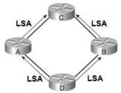
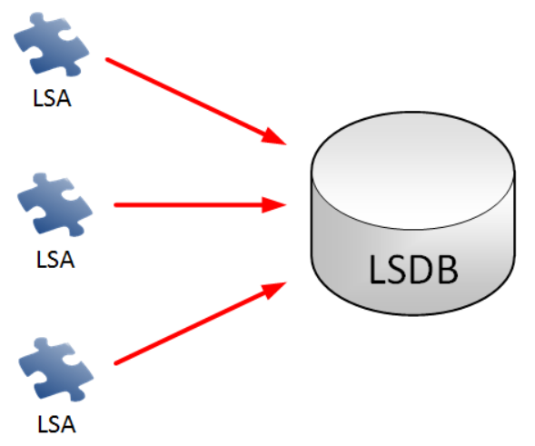
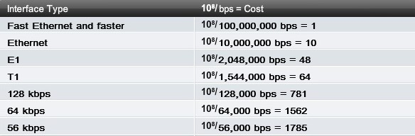
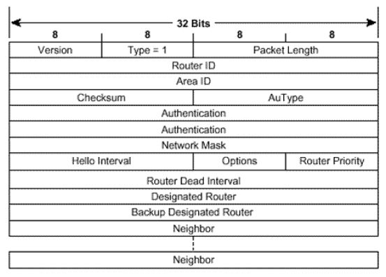
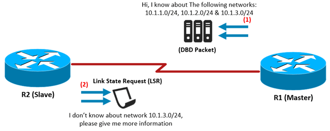

Open Shortest Path First je najpoužívanejší komunikačný protokol typu link-state, to znamená že smerovač pozná štruktúru celej siete.V súčasnosti sa používa verzia OSPFv2 ktorá je určená pre IPv4 siete. OSPF je tzv. beztriedny smerovací protokol, pracuje v sieťach s rôzne dlhými maskami podsietí (VLSM). Na IPv4 sieťach využíva vlastný transportný protokol č. 89. U smerovačou firmy CISKO je administrativna vzdialenosť protokolu implicitne 110.
Pojmy v OSPF
Link
Rozhranie smerovača
Link-state
Vlastnosti rozhrania (IP adresa/maska, cena, s kým nás spája)
Link State ID
Unikátny identifikátor, pod ktorým je možné v databáze vyhľadať konkrétny link-state záznam Zvyčajne Router ID, DR router IP, NET adresa atď.
Router ID
4B číslo jednoznačne identifikujúce router v autonómnom systéme Môže, ale nemusí zodpovedať nejakej jeho IP adrese
OSPF si udržiava tri databázy
Adjacency Database (show ip ospf neighbor)
Databáza susedov a komunikačných vzťahov medzi nimi
Link-state Database (LSDB) (show ip ospf database)
Topologická databáza obsahujúca orientovaný graf siete vystavaný pomocou informácií v jednotlivých LSA
Ak je router vo viacerých oblastiach, pre každú si vedie samostatnú LSDB Všetky routery v rovnakej oblasti majú identickú LSDB
Forwarding Database (show ip route)
Obsahuje informácie o každej dosiahnuteľnej sieti a príslušnom next-hop routeri V OSPF teoreticky smerovač pozná úplnú cestu od seba do cieľovej siete, v smerovacej tabuľke sa však zaznamená vždy len prvý nasledujúci smerovač
Pojmy v OSPF
LSA
Dátová štruktúra posielaná v paketoch OSPF protokolu,ktorá prenáša topologickúinformáciu
Každé LSA má svoju hlavičku,ktorá ho identifikuje, ainformačné telo
Nie je samostatný paket!
Posielaná pri inializácii alebo pridetekovaní topo zmeny
Je multicastovo šírenásusedom na 224.0.0.5 alebo224.0.0.6 LSA prijatá smerovačom je bezprostredné poslaná jeho susedom Až po hranice oblasti

LSDB
LSA prijatá smerovačom je pridaná do jeho link-state databázy (LSDB).
LSDB sa používa na kalkuláciu SPF stromu OSPF algoritmom
Pre každú cieľovú sieť zoznam ciest

SPF Algoritmus
OSPF algoritmus pre každú sieť v LSDB na základe ceny počíta najlepšiu cestu
Strom najkratších vzdialeností
SPF tree
Je orientovaný
OSPF algoritmus jezaložený na Edsger Dijkstra's shortest path first (SPF) algoritme
Routing table
Najlepšie cesty pre dané siete vypočítane SPF algoritmom sú pridané do smerovacej tabuľky
Cost metrika
Cisco používa metriku ako cost. Cost sa líši od veľkosti šírky pásma(Bandwidth)
Bandwidth inak povedané šírka pásma je rýchlosť prenosu dát cez danú cestu. Čím vyššia bandwidth je tým je menšia cost
Bandwidth + = Cost --
Bandwidth -- = Cost +

Vzťahy, Rozdiel DR-BDR, Area
Neighborhood
Komunikačný vzťah medzi dvojicou susediacich smerovačov
Je vytvorený, ak sa oba smerovače zhodnú na hodnote povinných parametrov
Cez neighborhood sa neprenáša smerovacia informácia, iba informácia o schopnosti vzájomne komunikovať
Neighborhood je teda vytvorený medzi ktoroukoľvek vzájomne spojenou dvojicou správne nakonfigurovaných a pracujúcich OSPF routerov
Adjacency
Komunikačný vzťah medzi dvojicou susediacich smerovačov Stav Full
Adjacency je užší komunikačný vzťah, ktorý umožňuje takto „spriateleným“ smerovačom vymieňať si aj samotnú smerovaciu informáciu
Vytvára sa iba medzi vybranými smerovačmi
Designated Router (DR)
Je to smerovač na multiacces segmente, ktorý je centrálnym bodom pre výmenu smerovacej informácie na segmente. DR je vždy len jeden na multiaccessegmente a určujú si ho smerovače automaticky podľa najvyššej priority.
Backup Designated Router (BDR)
BDR slúži ako záloha pre DR v multiacces segmente, jedná sa o smerovač s druhou najvyššou prioritou. Nemusí byť vytvorený.
Area
Area (Oblasť) je vytvorená za účelom optimalizovať a zvýšiť ochranu vo veľkých sieťach. Je to nami určený počet smerovačov, ktoré poznajú topológiu vlastnú topológiu, avšak nepoznajú vedľajšie aj ked sa jedná o jeden smerovací protokol. Aby oblasti mohli medzi sebou komunikovať musia byť spojené cez areu 0. Hranice linky sú na smerovačoch a nie na konci liniek.
Area Border router (ABR)
ABR je smerovač na rozhraní medzi viacerými oblasťami, pretože v OSPF musí každý ABR v oblasi 0. ABR tvorí spojenie medzi rozhraniami a cez ABR ostatné oblasti medzi sebou komunikujú
Pakety v OSPF
Hello packet
Slúži na zisťovanie a udržiavanie si neighborhood vzťahov so susednými smerovačmi. Taktiež sa používa na určenie si DR a BDR smerovačov. Prenáša inforácie medzi susedmi ktoré musia spĺňať určité požiadavky Hello packet sa posiela každých 10 sekúnd ak sa jedná o siete typu broakast alebo point to point 30 sekúnd na sieťach typoch point to multipoint.
Dead interval
Je vždy 4x väčší ako Hello interval. Je to interval do krorého ak nie je prijaté žiadne Hello je sused odstráneni zo zoznamu susedov

DataBase Description Packet (DDP alebo DBD)
DDP sa používa pri prvotnej synchronizácii databáz topológie medzi dvoma routrami. Prenáša len názvy jednotlivých položiek, nie kompletnú informáciu o topológii.
DBD paketmi komunikujú routeri počas sychronizácie topologických databáz, kedy vytvárajú zoznam susedov,resp. zoznam položiek kotré sused má nové alebo ktoré sused nemá.
Link State Request (LSR)
LSR je packet ktroý si vyžiada priamo konkrétnu položku topológie od suseda.

Link State Update (LSU)
Prostredníctvom LSU sa prenáša samotná topologická informácia. Topologická informácia je vo vnútri LSU obsiahnutá ako jedna alebo niekoľko LSA položiek
Link State Acknowledgement (LSAs)
Slúži na potvrdenie úspešného prijatia konkrétneho LSA. V jednom LSAck môže byť potvrdených mnoho LSA
OSPF Stavy
Down
Štartovací stav ospf. Od konkrétneho suseda ešte nedostávame Hello pakety pretože ako prvý posielame Hallo pakety my.
Attempt
Attempt platí len v NBMA sieťach. NBMA siete slúžia na nadviazanie susedstva a nie na rozposielanie informácií dalej do siete. Od konkrétneho suseda sme zatiaľ nedostali žiaden Hello packet, my sme tý ktorý posielajú Hello paket adrese na tohto suseda
Init
Od suseda sme dostali Hello paket a informácie v ňom spľňajú požadované kritéria na formovanie "neighbor vzťahu", avšak svoje vlastné RID v tomto Hello pakete nevidíme
2-Way
Dostali sme Hello paket od suseda s informáciami na na formovanie neighbor vzťahu a naviac v ňom vidíme aj vlastnú RID. Týmito fázami prejdú všetky smerovače ktoré chcú nadviazať susedské spojenie. Vo fáze 2-Way sú splnené podmienky na obojstranú komunikáciu medzi smerovačmi. Bežný susedia už v komunikácií nepokračujú. Do nasledujúcich fáz sa pokračuje len vtedy ak sú siete kde sa DR/BDR nevolí alebo aspoň jeden z dvojice je DR/BDR
ExStart
Smerovače si navzájom vymenia prázdne DBD pakety, aby pre účel výmeny topologických databáz, zistili kto bude tvz. Master a kto Slave(Rozhoduje vyššie RID). Master smie zvyšovať sekvenčné číslo v DBD paketoch
Exchange
Smerovače si vymienajú DBD pakety, v ktorých si navzájom popisujú svoje topologické databázy. Na základe týchto informácií si každý smerovač tvorí zoznam LSA.
Loading
Smerovače si počas fázy Exchange vytvorili zoznamy LSA, ktoré chcú od suseda stiahnuť.
Full
Smerovač sa dostane do fázy Full vtedy, ked od suseda získa všetky informácie, o ktoré mal záujem. Dva smerovače vo vzájomnom stave Full majú identické topologické databázy a sú úplne synchronizované.